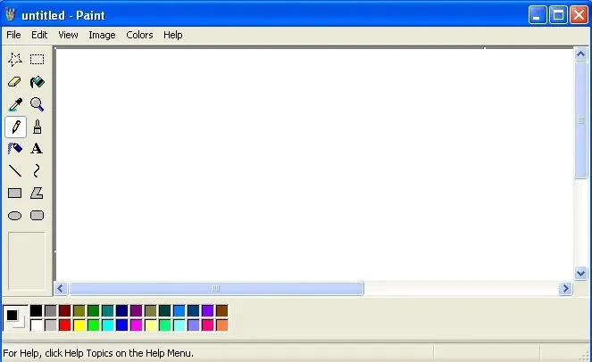

# Class 12 Canvas drawing Programming Interactivity ---- Harbour Space --- ### How did yesterday's project go? Note: - Did you do any new nice interactive drawings. --- ## Agenda <div style="text-align: left;"> 01/ This week schedule 02/ Class Final Project 03/ Excercise --- ### This week schedule - Monday: Canvas drawing shapes - Tuesday: Canvas drawing - Wednesday: Practical class - Thursday: Practical class - Friday: Class Final Project presentation --- ## 01/ Class Final Project --- ### Class Final Project We will combine everything we have learned into one page You can decide what you want to create. It can be a CV page, landing page for your future startup or a design you have kept away and want to impliment Note: - show Notion document --- ### Class Final Project Is 50% of final grade - Turn in your ***code*** - ***Text document*** that explains your page and what points you are aiming for - ***Presentation*** on Friday --- ### Todays excercise will be a drawing application Note: - Today we are going to continue with drawing on a canvas. - Today we are going to create a canvas drawing application, something like this. - Its not required to do all of these methods, but at least drawing, changing color and clearing the canvas. --- ### Looks similar  Note: - We are basically re creating the basic functionality of Paint. --- ## 03/ Excercise Note: - So lets do it!